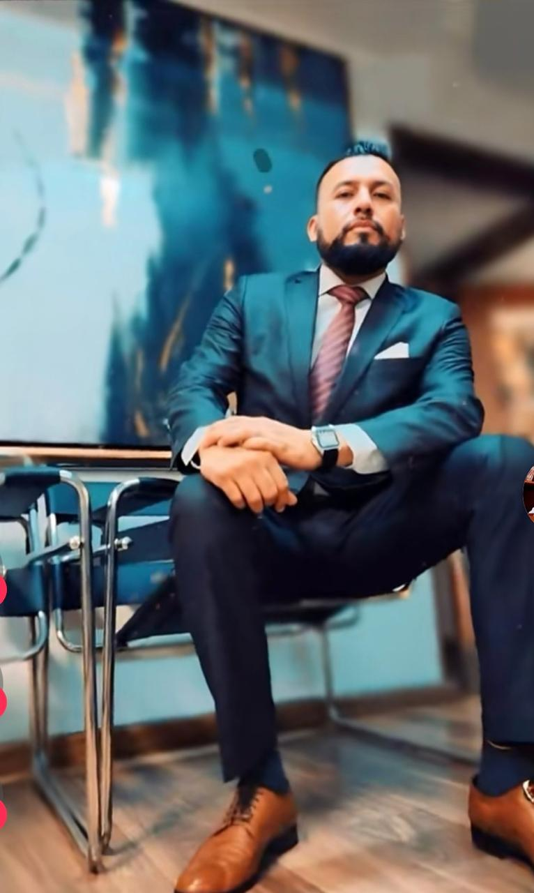

Silvia Contreras
+52 55 2008 8707
Investigadora técnico - científica de incendios y explosiones
Formación profesional en Técnicas de Investigación de Incendios Fl 1B Intermedio, Origen y Causa de los Incendios Fl 1A y Técnico en Intervención de Campo.
Ha colaborado en capacitación y formación de investigadores, peritos, cuerpos de bomberos, personal de protección civil y profesionales del ejecicio libre.
Actualmente se desempeña como perito particular en investigación técnico - científica de incendios y explosiones, desarrollando actividades de investigación y asesoría técnica en el ámbito privado.

Arturo Sandoval
+52 33 2942 3489
Consultoría profesional
Profesional formado en la Universidad de Veracruz, con preparación adicional en la Universidad Automana de México.
Participación en la presidencia del Colegio de Abogados de Jalisco, representación legal de asociaciones civiles y coordinación nacional en defensa penal.
Abogado penalista con amplia trayectoria en defensa jurídica, liderazgo en asociaciones civiles y coordinación en bioética y responsabilidad médica. Actualmente combina la práctica profesional con la docencia universitaria.